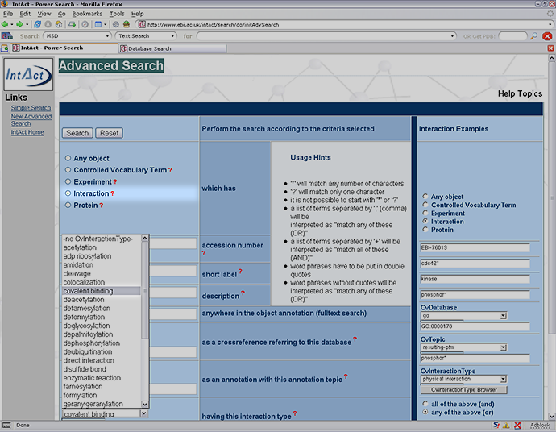
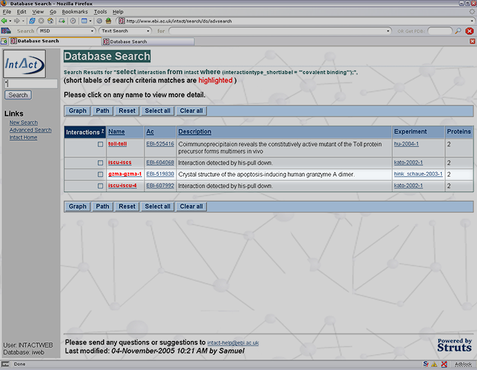
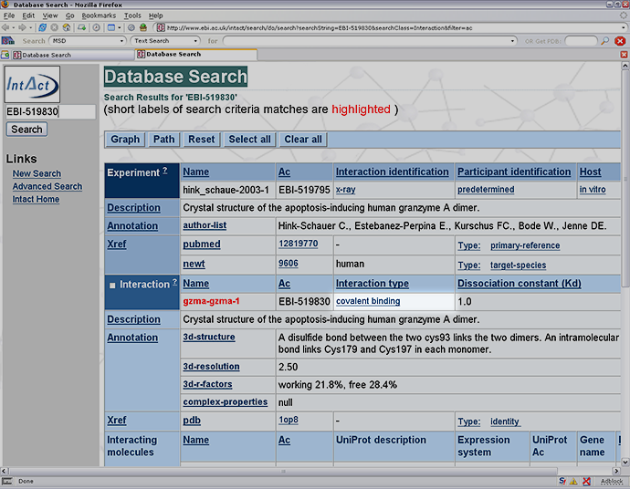
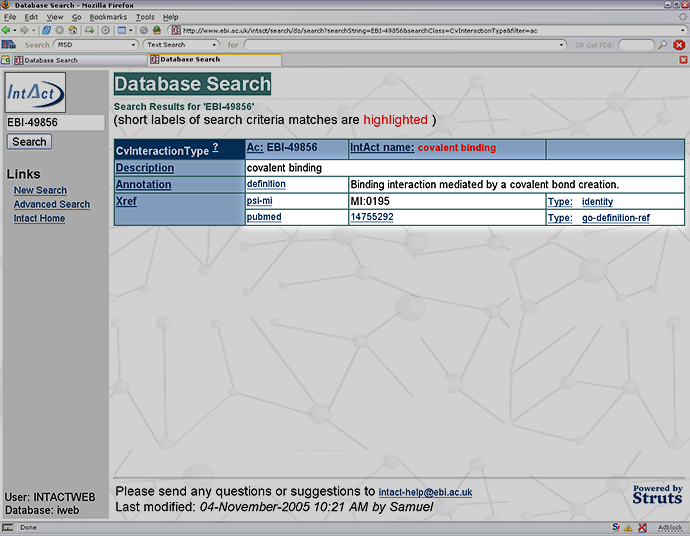
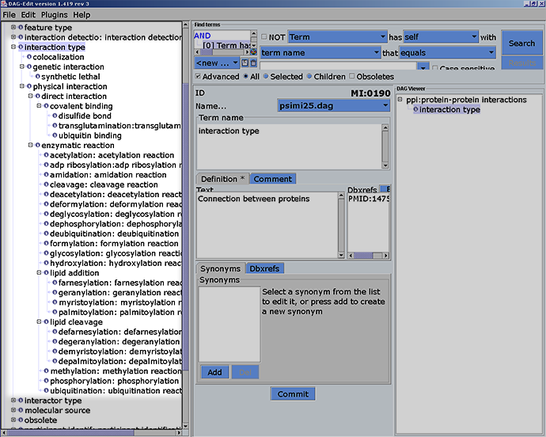

|
The type of interaction between a protein and another molecule is described using a controlled vocabulary (CV). To see the
various CV terms and their organisation can be seen
below. These Interactor type CV terms
can also be used to search for Interactions of a particular types (i.e. covalent binding).
The different Interaction types can be search using the Advanced Search tool shown below. By selecting the Interaction object a drop-down
menu appears listing of the Interaction types which are contained in the IntAct data.

Below shows the results page from the search. Four interactions (at the time of writing) show covalent binding.
By clicking on either the Name or Ac the page below will appear.

The page below shows the details of the Experiment that features the Interaction,
further details of the Interaction and information about the proteins involved.

Clicking the Interactor type takes you to a page which features further information and also a link to a PubMed entry that features an
article from the literature that describes the Interaction type

The structure and range of the CV for interaction types is highlighted below. The tree structure shows the hierarchy of the CV
terms. The every branch produces a more specific variant of its parent term.

|